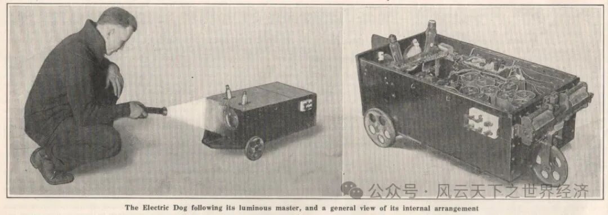
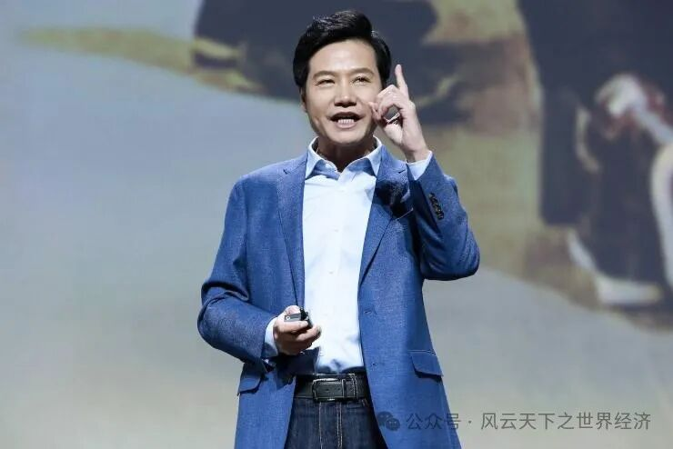
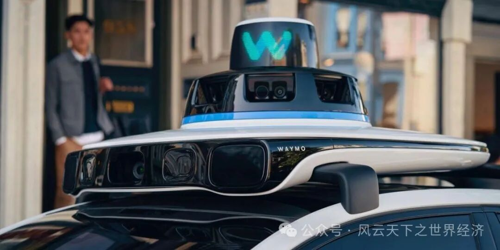
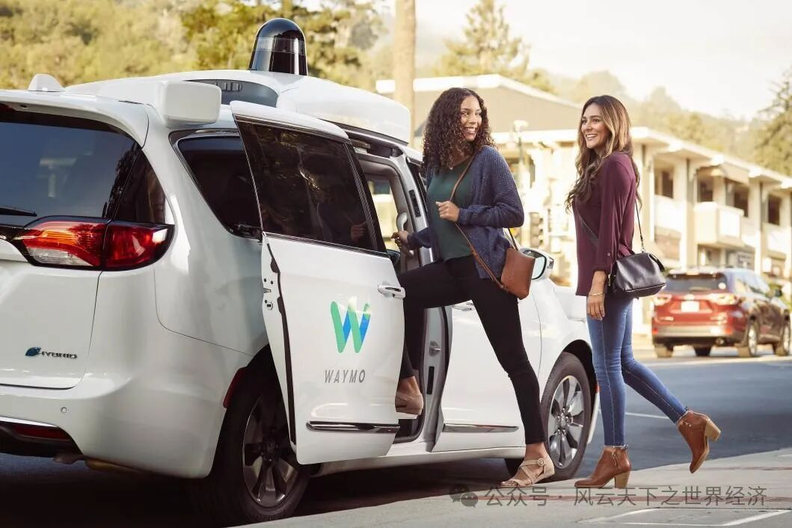
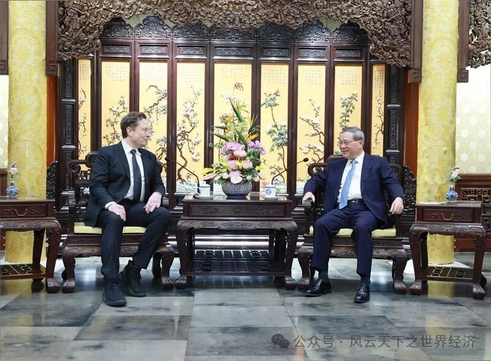

天色渐晚，忙碌了一整天的你拖着疲惫的身体拦下一辆出租车，你坐上车，在手机上输入家的地址，然后闭上眼睛打算小憩一会，车辆缓缓启动，无声的引擎带着你开始了一段奇妙的旅程。
路上的行人匆匆而过，车辆轻盈地避让，宛如一场精密的舞蹈。你的身体感受到微微的摇晃，但却没有传统车辆行驶时的颠簸感，仿佛你正在漂浮在柔软的云端上。慢慢睁开眼，你发现车辆已经自动穿越了繁忙的城市街道。抬头望去，车窗外的景色如同一幅流动的画卷，建筑物、树木、以及远处闪烁的霓虹灯，一切都在你眼前以一种悠然的速度流逝。你能感受到车辆的智能系统在不断地分析周围环境，通过激光雷达、摄像头和雷达等传感器，做出精准的决策，让你在旅途中完全放心。
窗外的街道上，其他车辆在有序地行驶，彼此之间保持着安全的距离，而你乘坐的车则像一部无形的导航船舶，在这片交通的海洋中巧妙航行。当有车辆突然变道或者行人突然出现时，你可以清晰地看到车辆自动识别并做出反应，以确保行驶的顺畅和安全。
在自动驾驶的世界里，你不再需要担心交通拥堵或者车祸的发生，你可以尽情地沉浸在旅途中，欣赏窗外的美景，或者专注于自己的工作。这并非是科幻小说中的幻想，而是如今自动驾驶技术的真实写照。随着科技的不断进步，人工智能与自动驾驶技术的强强结合正在引领一场轰轰烈烈的“司机革命”，我们的出行方式正在以前所未有的方式改变着。
谁发明了“自动驾驶”？
自动驾驶技术的提出可以追溯到20世纪上半叶，当时科学家们已经开始探索汽车自动化驾驶的概念，该技术最初被广泛用于军事领域，根据《科学美国人》记录，大约在1912年，美国无线电控制设备专家小约翰·哈蒙德(John Hammond Jr.)和本杰明·密斯纳(Benjamin Miessner)利用一个电子回路和一对光感性硒光电管设计了一款简单的自动引导小车，并给它起了一个凶悍的名字——“战争狗”。

约翰·哈蒙德和本杰明·密斯纳 1912年发明的“战争狗”
战争狗的设计原理很简单，在小车左右两边安装上能感知环境的光强差异光感电管，再由电子回路构成的底层控制系统根据光强信号控制小车转向，如果两侧感光存在差异，小车将向光强一侧转向；如果两侧感光均衡，小车保持直行。战争狗的机械设计相对比较粗糙，但却给后续无人驾驶提供了思路，现如今我们在车上使用的定速巡航从本质上也和战争狗有相同的逻辑，在车速较低时，自动注入较多汽油提升车速，如果车速过快，控制器会减少汽油的注入，直到预定速度和实际速度之间的差异为零。
1969年，人工智能的创始人之一的约翰麦卡锡在一篇名为“电脑控制汽车”的文章中描述了与现代自动驾驶汽车类似的想法。麦卡锡所提出的想法是关于一名“自动司机”可以通过“电视摄像机输入数据，并使用与人类司机相同的视觉输入”来帮助车辆进行道路导航。1977 年，斯坦福大学人工智能博士汉斯·摩拉维克（Hans Moravec）研制了一台配备立体视觉和电脑远程控制系统的小型模型车，他在车顶栏杆上安装了电视摄像机，能够从不同的角度拍摄照片，并将其传送到电脑，电脑则利用照片计算小车和它周围的障碍物之间的距离，并操纵小车绕过障碍物。这辆小模型车在没有人干预的情况下，花了大约5个小时成功地穿过了一个放满椅子的房间，这标志着无人驾驶技术的发展即将进入一个新的发展阶段。
20世纪无人驾驶技术取得了很大的成就，从早期的无线电遥控到无线电导引，再到为车辆装配传感器、计算系统和控制系统等，这些技术赋予车辆“视觉”、智能和自动化的能力，无人驾驶技术的发展方向也从最初的公路智能化转到了车辆智能化上来。进入21世纪，美国国防部高级研究计划局举办的一个无人驾驶车挑战赛——DARPA Grand Challenge吸引了以Google为代表的全世界ICT（Information and Communications Technology，信息与通信技术）公司和硅谷创业公司加入到智能汽车的研发中来，由此也引起了传统汽车产业“智能化”的变革，一些知名的科技公司和汽车制造商开始投入大量资源进行自动驾驶技术的研发：谷歌（现Alphabet旗下的Waymo）、特斯拉、Uber、奥迪、奔驰等公司都在自动驾驶技术领域有着重要的布局和突破。
不停进化的“司机”——人工智能
人工智能（AI）的提出可以追溯到20世纪中叶，当时科学家们开始思考如何使计算机来模拟人类的智能行为。1956年的达特茅斯会议被认为是人工智能领域的起点，会议的召开标志着人工智能作为一个独立的学科正式出现。
20世纪80年代，连接主义和机器学习等新的方法涌现，人工智能研究又重新焕发活力；随着计算机硬件性能的不断提升和数据量的爆炸式增长，人工智能技术在21世纪迎来了爆发式的发展。深度学习技术的兴起使得人工智能在图像识别、语音识别、自然语言处理等领域取得了重大突破，引领了人工智能技术的新潮流。同时，云计算和大数据技术的普及也为人工智能的发展提供了强大的支撑，使得人工智能技术能够更广泛地应用于各个领域。
与自动驾驶技术的结合是人工智能在商业领域中的一个重要应用方向。自动驾驶技术需要通过传感器和计算机视觉等技术来感知周围环境，并做出相应的决策。人工智能的发展为自动驾驶技术提供了强大的支持，使得汽车能够更准确地感知道路和其他车辆，从而实现更安全和可靠的驾驶。例如，深度学习技术在图像识别和目标检测领域的应用使得自动驾驶系统能够准确地识别和理解道路标志、行人、车辆等重要物体，为驾驶员提供更全面和准确的信息，从而提高驾驶的安全性和舒适性。
自动驾驶汽车面临的交通环境是多变而复杂的，新的交通规则、随机的道路状况使得事故和危险随时可能发生。而作为“司机”的人工智能能够不断地学习和适应，不断地更新自己的知识库和行为模式。通过深度学习、强化学习等技术，人工智能能够从每一次的行驶经验中汲取教训，不断地完善自己的驾驶能力以更好地应对突发状况，及时做出正确的应对措施确保乘客的安全。
为什么要发展自动驾驶技术？
显然，蕴含无限想象空间的商业应用价值驱动了自动驾驶技术的发展
首先，自动驾驶技术的应用反映了规模经济与生产成本的关系。一旦自动驾驶技术投入使用，企业就可以实现无人驾驶车队的规模化运营，从而降低了每单位产品的生产成本。这是因为自动驾驶系统可以同时管理多辆车辆，无需为每辆车辆提供一个独立的司机，大大降低了人工成本。一家自动驾驶企业的高管曾透露过，滴滴公司目前70%的收入都付给了司机，如果自动驾驶技术能够顺投入使用，70%的支出就会瞬间转变为毛利率，其利润将会大到难以想象。
其次，自动驾驶技术也涉及外部性与社会福利的关系。由于自动驾驶系统的精准控制和反应速度，交通事故的概率将大幅降低，从而减少了医疗支出、车辆维修费用等外部成本，提高了整体社会福利。
最后，自动驾驶技术还涉及到供需平衡与资源配置效率的经济学原理。通过提高配送效率和降低成本，自动驾驶技术可以满足消费者对更快速、更便捷配送服务的需求，从而促进了供需平衡。同时，自动驾驶技术还可以帮助企业更有效地配置资源，提高了资源利用效率。
小米公司的创始人雷军曾说过“只要站在风口上，猪也能飞起来”，如今人工智能技术突飞猛进，自动驾驶技术的发展速度也不逞多让，再加上人们对于多样化通勤选择的需求日益增长，自动驾驶商业化大有成为新风口的趋势，这也难怪包括谷歌、特斯拉在内的众多科技巨头在这条赛道中你追我赶，都想要在这场“司机革命”中占据领先的位置。

小米创始人雷军在某科技论坛上发表演讲
机器人出租车向你驶来
商业应用方面，谷歌自动驾驶项目Waymo是业界最早投入研发的项目之一，他们通过激光雷达、摄像头、毫米波雷达等传感器以及深度学习等人工智能技术，实现了在不同路况和天气条件下的自动驾驶功能。
2016年12月，谷歌母公司Alphabet宣布Google的自动驾驶项目将作为公司内部一个名为“Waymo”的独立实体存在，“Waymo”所代表的意思是："A new way forward in mobility"（未来新的移动方式），这也代表着Waymo 对未来出行的愿景。Waymo是自动驾驶技术领域的领先者之一，他们在自动驾驶技术的研发和商业化应用上取得了重大突破。Waymo充分利用了人工智能，结合深度学习、机器学习、传感器技术和高精度地图等多种技术，实现了车辆在不同环境下的自主导航和驾驶。
Waymo的自动驾驶技术是一个典型的人工智能与自动驾驶结合的典范，他们通过深度学习、数据分析和高精度地图等技术，实现了车辆在现实道路环境中的自主导航和驾驶，为用户提供了安全、高效的出行体验。
Waymo自动驾驶系统的核心是其自主研发的硬件和软件系统。该系统包括激光雷达、摄像头、毫米波雷达等传感器设备，以及基于深度学习和机器学习的智能驾驶算法。这些传感器设备能够实时感知车辆周围的环境，包括道路、车辆、行人等，并将感知到的信息传输给车辆的控制系统。Waymo还使用了高精度地图和定位技术，帮助车辆准确地了解自身位置和周围道路的情况，这些地图数据不仅包括道路的基本信息，还包括车道线、交通信号等细节，为车辆的导航和规划提供了重要参考。

Waymo自动驾驶汽车顶部的传感器设备
另外，Waymo在不同城市和路况下进行大规模的测试和数据收集，这些数据被用于训练自动驾驶系统的深度学习模型，使得系统能够更准确地理解和预测周围环境的变化。在无人驾驶这一科技行业中，其传统座右铭是“快速发展、打破常规”，但最终却导致了死亡、大量的负面新闻报道和日益严格的监管审查，Waymo因此非常重视自动驾驶技术的安全性和法规合规性。他们采取了多种措施来确保车辆的安全驾驶，包括严格的测试和验证流程、人工智能算法的自我监督机制以及与当地政府和交通管理部门的合作。Waymo 的谨慎态度以及对成熟技术的利用，使该公司在竞争中遥遥领先。
Waymo已经在美国多个城市开展了自动驾驶技术的商业化应用，其中最著名的是在亚利桑那州的凤凰城地区开展的自动驾驶出租车服务。用户可以通过Waymo应用程序预约自动驾驶出租车，体验无人驾驶的便利和安全。从收入的角度来看，自动驾驶有潜力成为世界上最大的行业之一：人们在叫车服务上花费的金额是惊人的，在纽约等大城市，叫车者每英里需花费1至2美元。更重要的是，拥有自己车辆的个人也在以机会成本的形式间接付出代价，毕竟自己在驾驶车辆的时间不能用于工作或休闲，而自动驾驶出租车服务则完美解决了这一问题。仅考虑美国市场的情况下，自动驾驶网约车服务每年大约有三万亿英里的服务量。任何无人驾驶企业如果能够以当今网约车成本的一小部分来获取这些里程中的一小部分，该公司每年也将能够获得数千亿美元的收入。
目前，Waymo正在成为自动驾驶竞赛中明显的领跑者。Waymo 已经拥有全面运营的自动驾驶出租车业务，这是特斯拉及其他科技公司长期以来的梦想。尽管 Waymo 的自动驾驶出租车业务（Waymo One）对整个网约车市场的影响仍然很小，但它正在以惊人的速度取得进展。目前Waymo的纯乘客驾驶里程已经超过7 百万英里，这个数字已经远远领先于任何竞争对手，如果能够保持这样的增长势头，到2024年底，这个数字将会是1亿英里。与此同时，Waymo 仍继续在越来越多的城市拓展其自动驾驶出租车业务，截止2023年底，已有超过10 万人注册了Waymo的乘车服务，在某些区域想要使用自动驾驶叫车服务甚至需要进行排队， Waymo 目前在自动驾驶市场的领先地位可见一斑。

美国民众体验Waymo的无人驾驶出租车出行服务
马斯克闪电访华
2024年4月28日，特斯拉CEO埃隆·马斯克闪电访华，于29日离开，这趟短短不到24小时的访问行程却让特斯拉股价暴涨15%，不禁让人好奇其中究竟发生了什么。
本次访华对于马斯克来说可谓是硕果累累，其中最大的成果便是特斯拉取得了数据安全“绿牌”，这一消息放出再次引发了关于“特斯拉全自动驾驶（Full-Self Driving，以下简称“FSD”）入华”的讨论与特斯拉“Robotaxi”项目落地实施的猜想。

4月28日下午，国务院总理李强在北京钓鱼台国宾馆会见马斯克 （图源新华社记者 王晔 ）
特斯拉的“FSD”技术是基于神经网络人工智能算法，通过大量训练来模仿人类开车，并做出相应的决策和操作。简单地说，该方案就是把摄像头获取的图像数据输入到算法后，能直接输出为转向、加速、制动等车辆控制指令，就像是一个人类的大脑，不需要诸如Waymo等其他公司的自动驾驶方案中必不可少的高精地图以及激光雷达作支撑，“FSD”仅依靠图像数据输入就能分析并输出控制策略。而这项技术正在为马斯克的“无人驾驶出租车”（Robotaxi）计划铺平道路。
Robotaxi是特斯拉将人工智能与自动驾驶商业化举措之一，它的推出离不开特斯拉FSD（全自动驾驶）技术早已构建的核心竞争力和护城河。特斯拉的FSD自发布以来，已经实现了超过16亿公里的行驶，这一数字远超百度自动驾驶9000万公里的里程——用马斯克的话说，特斯拉的“ChatGPT”时刻即将到来。马斯克认为，如果能够实现完全自动驾驶，车辆就可以像共享单车一样在很多用户之间共享，能够提高5倍的车辆使用价值大大提高资源的利用效率。Robotaxi的推出象征着特斯拉正式进入“无人驾驶出租车”这条赛道当中，将毫无疑问地成为“Waymo”强有力的竞争者之一，根据美国相关金融机构预测，到2030年，特斯拉的移动出行业务收入将达到170亿美元；此外，众多业内人士认为，即将到来的Robotaxi或将带来下一次工业革命，在出行领域真正实现从老人机到智能手机、从传统纸媒到全媒体的跨越式颠覆。
本次访问正是因为马斯克看中了中国所拥有的庞大出行需求，麦肯锡预计，中国未来很可能成为全球最大的自动驾驶市场，至2030年，自动驾驶相关的新车销售及出行服务创收将超过5000亿美元。如此之大的诱惑也难怪马斯克不惜放了印度鸽子，前往中国洽谈合作。此次中国行，马斯克提出想在中国落地“无人驾驶出租车”项目，对此，中国政府或先支持其在国内测试、作示范，暂未完全批准其在华全面落地。但可以预见的是，特斯拉的无人驾驶出租车项目具有巨大的潜力和前景，在不远的将来，人们乘坐特斯拉无人出租车出行的场景指日可待。
结语
在这个信息时代的潮流中，人工智能与自动驾驶技术的迅猛发展几乎已经达到了空前的高度。从早期简际的无线电遥控到今天的高精度传感器和复杂的神经网络，自动驾驶技术正步入更加成熟的阶段。智能化的车辆不仅搭载着我们的身体，更承载着人们对于未来生活的无限憧憬；而自动驾驶技术不断进步的背后，也正是人工智能如何服务于社会、如何与人类生活更深入融合的最佳证明，这不仅仅关乎技术本身，更关乎其背后的哲学思考——如何使技术更好地服务于人类，使我们的生活更加美好。我们有理由相信，未来的世界将是更加智能、安全和高效的。人工智能与自动驾驶技术的结合，将毫无疑问地引导着这场“司机革命”走向成功，成为我们智能科技旅程中一个重要的里程碑，这不仅仅是科技的胜利，更是人类文明向前迈进一大步的证明。